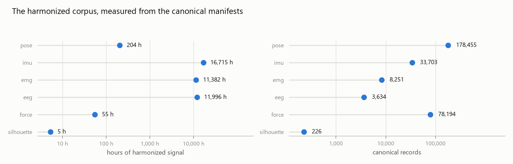
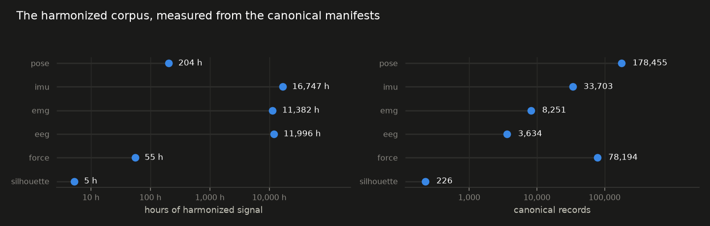
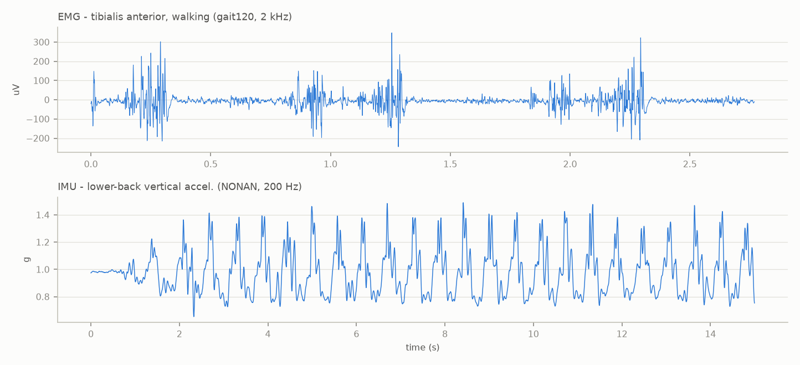
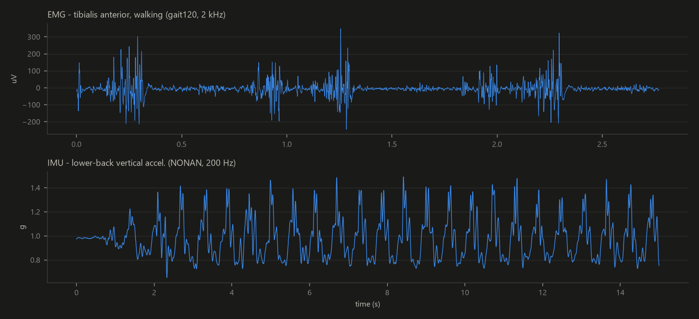
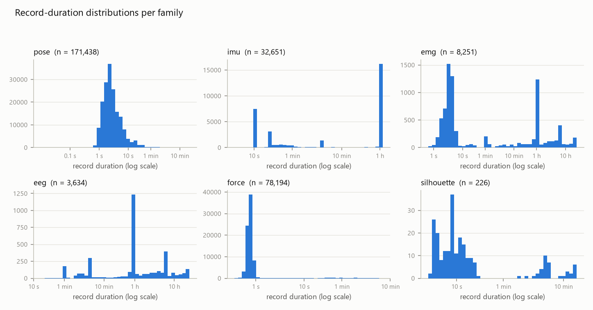
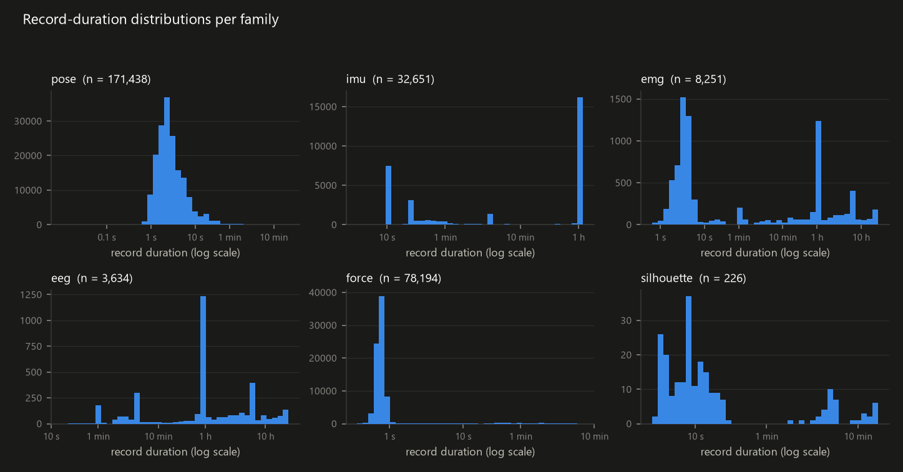
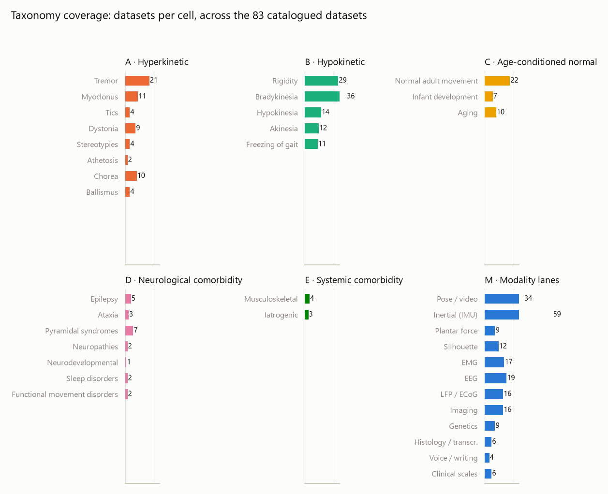
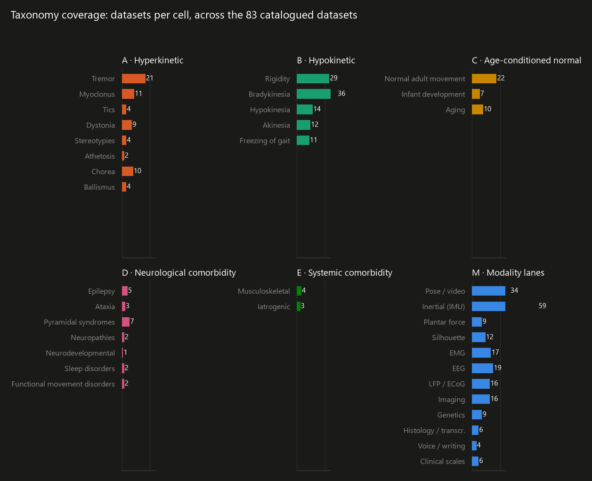

Corpus statistics#
Everything on this page is computed from the canonical manifests (the
files datasets/_canonical_*_manifest*.csv that every ingestion
maintains); nothing is estimated or copied from papers. Counting rule:
one record = one canonical file entry (a trial, a night, a wear-block,
depending on the family); hours = sum of n_frames / native rate.
Regenerate with python site/gen_figures.py.
The harmonized corpus at a glance#
| Family | Datasets ingested | Subjects | Records | Hours |
|---|---|---|---|---|
| pose | 12 | 27,702 | 178,455 | 204 |
| imu | 20 | 1,695 | 33,703 | 16,715 |
| emg | 11 | 622 | 8,251 | 11,382 |
| eeg | 8 | 566 | 3,634 | 11,996 |
| force | 6 | 2,943 | 78,194 | 55 |
| silhouette | 2 | 130 | 226 | 5 |
| total | 59 | 33,658 | 302,463 | 40,357 |
{kind=link}

{kind=link}

How to read these numbers#
pose is record-rich but hour-light: mocap and video-derived trials are short (seconds to minutes) and there are many of them, across 27,000+ subjects (large-scale action corpora dominate the subject count).
imu dominates the hours: wearable studies record days of free living per subject (weeks-long accelerometry in the ageing and Parkinson cohorts).
emg and eeg hours are driven by long recordings (whole-night polysomnography, hours-long freezing-of-gait protocols) rather than by record counts.
force is trial-shaped (a footstep pair per record), hence many records, few hours; silhouette is the smallest family today.
These figures cover the INGESTED harmonized corpus: 46 distinct datasets with measured records (a multimodal set counts in each family it feeds, so the per-family dataset counts sum higher). The full catalogue holds 170: the remainder splits into pointer-tier sets used through their original access routes, aux tables, and documented barriers; see Datasets.
What is downloadable: 122,303 of the 302,463 records (36 datasets) are served from the 54 published MoveAtlas records; 174,506 (9 datasets, chiefly the large healthy 3D pose bases and the licence-held clinical sets) are harmonized on the ingestion machine only and are reproducible from the original host with
moveatlas.fetchandmoveatlas.ingestwhere the origin allows.Every number on this page is HUMAN data. The animal lane (11 catalogued datasets: mouse, rat and macaque models) is deliberately absent from every table here: animal entries map to symptom analogs in free text on their own cards and never enter the human clinical cells, so each matrix stays single-species.
What a record looks like#


{kind=link}

{kind=link}

Record durations#
{kind=link}

{kind=link}

Each family has its own shape and the histograms show it honestly: pose records live in the seconds range (trials); IMU is bimodal (short protocol trials against multi-hour free-living wear blocks); EMG and EEG mix short trials with whole-session and whole-night recordings; force records are sub-second footstep pairs.
Modalities by symptom#
Which modality lanes carry data for each target symptom cell of the taxonomy (hyperkinetic A1-A8, hypokinetic B1-B5; every code is defined on the Taxonomy page). A dataset counts in every cell and lane it covers; the parenthesized number is the open-access subset. An empty row means no open data exists there today. Human datasets only; animal models never enter these cells.
Target symptoms: datasets per cell and modality lane; the parenthesized number is the open-access subset (hosted or recipe). Computed from the registry at build time.
| Pose & video | Wearable IMU | EMG | EEG | Force & pressure | Silhouette | LFP / ECoG (invasive) | MRI & imaging | Genetics | Histology & transcriptomics | Voice, writing & typing | Clinical scales | any lane | |
|---|---|---|---|---|---|---|---|---|---|---|---|---|---|
| A1 Tremor | 5 (3) | 6 | 2 | 1 | 2 | 3 | 4 (1) | 3 (1) | 1 | 1 (0) | 21 | ||
| A2 Myoclonus | 6 | 3 | 3 (2) | 2 | 2 | 11 | |||||||
| A3 Tics | 3 | 1 | 1 | 4 | |||||||||
| A4 Dystonia | 2 | 1 | 1 | 1 | 2 | 1 | 2 | 2 | 9 | ||||
| A5 Stereotypies | 3 | 1 | 1 | 4 | |||||||||
| A6 Athetosis | 2 | 2 | |||||||||||
| A7 Chorea | 3 (2) | 3 (1) | 1 | 1 | 1 | 2 (1) | 1 | 10 | |||||
| A8 Ballismus | 3 | 1 | 1 | 4 | |||||||||
| B1 Rigidity | 15 (7) | 4 (2) | 5 (3) | 3 (2) | 6 | 5 (3) | 1 (0) | 1 | 1 (0) | 29 | |||
| B2 Bradykinesia | 5 | 13 (10) | 1 | 5 | 4 | 2 | 4 | 4 (2) | 2 (0) | 4 | 2 (0) | 36 | |
| B3 Hypokinesia | 2 | 9 (7) | 2 | 1 | 1 | 1 | 14 | ||||||
| B4 Akinesia | 8 (1) | 3 (1) | 3 (1) | 1 (0) | 12 | ||||||||
| B5 Freezing of gait | 1 | 8 (7) | 1 | 3 | 2 | 11 |
Modalities by healthy context and comorbidity#
The same crossing for the age-conditioned normal axis (C) and the neurological and systemic comorbidity axes (D, E).
Healthy context and comorbidities: datasets per cell and modality lane; the parenthesized number is the open-access subset (hosted or recipe). Computed from the registry at build time.
| Pose & video | Wearable IMU | EMG | EEG | Force & pressure | Silhouette | LFP / ECoG (invasive) | MRI & imaging | any lane | |
|---|---|---|---|---|---|---|---|---|---|
| C1 Normal adult movement | 6 | 9 (8) | 3 | 1 | 3 | 3 (2) | 2 (1) | 22 | |
| C2 Infant development | 5 (3) | 1 | 2 (1) | 7 | |||||
| C3 Aging | 7 | 1 (0) | 2 (1) | 10 | |||||
| D1 Epilepsy | 1 (0) | 2 (1) | 1 | 2 (1) | 5 | ||||
| D2 Ataxia | 1 | 1 | 1 | 3 | |||||
| D3 Pyramidal syndromes | 3 (2) | 3 | 1 | 2 | 7 | ||||
| D4 Neuropathies | 2 | 2 | |||||||
| D5 Neurodevelopmental | 1 | 1 | 1 | ||||||
| D6 Sleep disorders | 1 | 1 | 1 (0) | 2 | |||||
| D7 Functional movement disorders | 1 | 1 | 1 | 2 | |||||
| E1 Endocrine | 0 | ||||||||
| E2 Metabolic | 0 | ||||||||
| E3 Diabetes-related | 0 | ||||||||
| E4 Musculoskeletal | 2 | 1 | 1 | 4 | |||||
| E5 Dermatologic | 0 | ||||||||
| E6 Iatrogenic | 1 | 2 | 3 | ||||||
| E7 Psychiatric | 0 |
Subjects with several modalities#
Datasets whose HARMONIZED records pair two or more families on the same subjects (matched by subject namespace inside each dataset). These are the subjects a multimodal model can actually align today.
| Dataset | Families | Subjects per family | Subjects with 2+ modalities |
|---|---|---|---|
| physionet_multimodal_gait | eeg + emg + force + imu | eeg 59, emg 58, force 59, imu 57 | 56 |
| stroke_gait_vancriekinge | emg + force + pose | emg 163, force 185, pose 188 | 160 |
| multimodal_fog | eeg + emg + imu | eeg 12, emg 12, imu 12 | 12 |
| sensefog | eeg + emg + imu | eeg 11, emg 11, imu 12 | 11 |
| gait120 | emg + pose | emg 120, pose 120 | 120 |
| weargait_pd | force + imu | force 175, imu 185 | 175 |
| seizeit2 | eeg + emg | eeg 125, emg 124 | 124 |
| cap_sleep | eeg + emg | eeg 35, emg 3 | 3 |
| total | 661 |
Interventions and state labels#
Datasets carrying an intervention axis (a drug, deep brain
stimulation, or a treatment trial) with machine-usable state labels:
the raw material for “what does a molecule or a stimulator do to the
movement” questions. Curated in docs/interventions.csv with the
evidence for each claim.
| Dataset | Intervention | State labels available | Evidence |
|---|---|---|---|
| li_taati | levodopa (chronic PD treatment; dyskinesias are the outcome) | UDysRS dyskinesia scores per clip; communication/drinking/leg_agility tasks | data card and source paper (Li & Taati); scores ride as eval-only labels [2026-08 ingestion] |
| cdystonia | botulinum toxin B randomized trial (placebo / 5000U / 10000U) | TWSTRS total score at weeks 0-2-4-8-12-16 per patient | status 2026-08-28: 631 rows / 109 patients / 9 sites / three arms (hbiostat table) [2026-08-28 read with pyreadr] |
| pd_biostamprc21 | levodopa | medication ON/OFF windows and MDS-UPDRS-III assessment windows per subject (eval-only) | status 2026-08-26: UPDRS windows and medication ON/OFF kept per subject under processed/annotations/ [2026-08-26 ingestion] |
| pd_meg_stn_lfp_ds004998 | levodopa | med ON vs med OFF recording sessions (MEG + STN-LFP) | dataset title and OpenNeuro ds004998 description; raw on disk (161.8 GB); invasive lane awaits its contract [2026-08-24 download] |
| kaggle_fog | levodopa | Medication on/off per recording in defog_metadata.csv and tdcsfog_metadata.csv | column verified inside the raw competition zip [2026-09-01 verified in zip] |
| tremordb | deep brain stimulation | tremor VELOCITY (laser Doppler) under DBS on/off and washout timepoints per target (GPi/Vim/STN) | RESOLVED 2026-09-01: ingested AS AUX by design (processed/tremordb_velocity.pkl; velocity sits outside the acc/gyro IMU contract so no canonical manifest rows are expected) [2026-08-22 aux ingestion; clarified 2026-09-01] |
| oxford_dystonia_lfp | DBS-implanted cohort (STN/thalamic electrodes; recordings) | per-hemisphere LFP + EEG + neck EMG + ACC; stimulation-state structure to be established at ingestion | card + MRC deposit structure (P1..P7 zips on disk) [2026-08-25 download] |
| beijing_sleep_lfp | DBS-implanted cohort (pallidal/thalamic electrodes) | polysomnography with LFP across 5 sleep disorders | card; application-gated (documented barrier) [not held] |
| accel_fluctuations | levodopa response study (MJFF) | motor-fluctuation accelerometry around dosing | recovered into the registry 2026-09-01 (adjudication item 21); access REFUSED (ACT) - documented barrier [not held] |
| oxford_stn_onoff_dbs | levodopa AND 130 Hz DBS | rest recordings in three therapy states: med ON / med OFF / DBS ON (LFP + EEG + accelerometer) | MRC BNDU page verified 2026-09-01 (CC BY-SA 4.0); queued for the owner's portal login [not yet held] |
| dystonia_alcohol_bfm | ethanol (alcohol responsiveness) | BFM ratings with alcohol-responsiveness phenotype across 1258 isolated-dystonia patients | Dryad CC0 confirmed via API at fetch [2026-09-01 downloaded] |
| pd_rest_eeg_onoff_ds002778 | levodopa | within-subject rest EEG sessions ON and OFF medication | OpenNeuro ds002778; full S3 sync [2026-09-01 downloaded] |
Taxonomy coverage#
{kind=link}

{kind=link}

The rich cells (pose/video and wearable IMU among modalities, bradykinesia and normal adult movement among the clinical axes) and the sparse ones (tics, stereotypies, athetosis) are both visible at a glance; the sparse cells are precisely where the CODY cohorts are the only data in existence, which is why their derived release matters (shipped: Zenodo, CC BY 4.0, 2026-09-01).
Signal usability (validity masks)#
How much of each record is USABLE signal, measured through each
family’s own honesty mechanism: per-frame/per-joint validity masks
(pose), detection masks (silhouette), sample-validity and channel
masks (IMU), sensor masks (force), declared-bad channels and finite
fractions (EEG), finite fractions (EMG, a family without masks by
design). Datasets larger than the sampling cap are measured on a
fixed-seed sample and say so in the Sampled column; regenerate
exhaustively with python mask_statistics.py --cap 0.
| Family | Dataset | Records seen | Measured | Sampled | Usable mean | median | p10 | fully usable |
|---|---|---|---|---|---|---|---|---|
| eeg | cap_sleep | 35 | 35 | no | 100.0% | 100.0% | 100.0% | 100.0% |
| eeg | multimodal_fog | 56 | 56 | no | 100.0% | 100.0% | 100.0% | 100.0% |
| eeg | pd_rest_eeg_ds004584 | 149 | 149 | no | 100.0% | 100.0% | 100.0% | 100.0% |
| eeg | pd_rest_eeg_onoff_ds002778 | 46 | 46 | no | 100.0% | 100.0% | 100.0% | 100.0% |
| eeg | pd_walking_eeg_ds007526 | 277 | 277 | no | 100.0% | 100.0% | 100.0% | 100.0% |
| eeg | physionet_multimodal_gait | 176 | 176 | no | 100.0% | 100.0% | 100.0% | 100.0% |
| eeg | seizeit2 | 2,850 | 2,850 | no | 100.0% | 100.0% | 100.0% | 100.0% |
| eeg | sensefog | 45 | 45 | no | 100.0% | 100.0% | 100.0% | 100.0% |
| emg | cap_sleep | 3 | 3 | no | 100.0% | 100.0% | 100.0% | 100.0% |
| emg | cervical_motion_multiplanar | 127 | 127 | no | 100.0% | 100.0% | 100.0% | 100.0% |
| emg | drummer_tremor_model | 131 | 131 | no | 100.0% | 100.0% | 100.0% | 100.0% |
| emg | gait120 | 4,125 | 4,125 | no | 100.0% | 100.0% | 100.0% | 100.0% |
| emg | multimodal_fog | 56 | 56 | no | 100.0% | 100.0% | 100.0% | 100.0% |
| emg | ninapro | 201 | 201 | no | 100.0% | 100.0% | 100.0% | 100.0% |
| emg | physionet_multimodal_gait | 169 | 169 | no | 100.0% | 100.0% | 100.0% | 100.0% |
| emg | physionet_semg_walking | 31 | 31 | no | 100.0% | 100.0% | 100.0% | 100.0% |
| emg | seizeit2 | 2,804 | 2,804 | no | 100.0% | 100.0% | 100.0% | 100.0% |
| emg | sensefog | 45 | 45 | no | 100.0% | 100.0% | 100.0% | 100.0% |
| emg | stroke_gait_vancriekinge | 559 | 559 | no | 100.0% | 100.0% | 100.0% | 100.0% |
| force | gaitndd | 64 | 64 | no | 100.0% | 100.0% | 100.0% | 100.0% |
| force | gaitrec | 75,732 | 75,732 | no | 100.0% | 100.0% | 100.0% | 100.0% |
| force | physionet_gaitpdb | 306 | 306 | no | 100.0% | 100.0% | 100.0% | 100.0% |
| force | physionet_multimodal_gait | 173 | 173 | no | 100.0% | 100.0% | 100.0% | 100.0% |
| force | stroke_gait_vancriekinge | 557 | 557 | no | 100.0% | 100.0% | 100.0% | 100.0% |
| force | weargait_pd | 1,362 | 1,362 | no | 100.0% | 100.0% | 100.0% | 100.0% |
| imu | capture24 | 3,941 | 3,941 | no | 100.0% | 100.0% | 100.0% | 100.0% |
| imu | clinical_gait_multipatho | 1,356 | 1,356 | no | 100.0% | 100.0% | 100.0% | 100.0% |
| imu | daphnet | 17 | 17 | no | 100.0% | 100.0% | 100.0% | 100.0% |
| imu | fog_star | 106 | 106 | no | 99.2% | 100.0% | 100.0% | 95.3% |
| imu | fog_turning_filho | 106 | 106 | no | 100.0% | 100.0% | 100.0% | 100.0% |
| imu | goodwin_smm | 67 | 67 | no | 100.0% | 100.0% | 100.0% | 100.0% |
| imu | hd_accel_jnet | 35 | 35 | no | 100.0% | 100.0% | 100.0% | 100.0% |
| imu | imu_inthewild_iprognosis | 1,017 | 1,017 | no | 100.0% | 100.0% | 100.0% | 100.0% |
| imu | kaggle_fog | 926 | 926 | no | 100.0% | 100.0% | 100.0% | 100.0% |
| imu | ltmm | 4,963 | 4,963 | no | 100.0% | 100.0% | 100.0% | 100.0% |
| imu | monipar | 46 | 46 | no | 100.0% | 100.0% | 100.0% | 100.0% |
| imu | multimodal_fog | 56 | 56 | no | 100.0% | 100.0% | 100.0% | 100.0% |
| imu | nonan_gaitprint | 719 | 719 | no | 100.0% | 100.0% | 100.0% | 100.0% |
| imu | nonan_gaitprint_young | 620 | 620 | no | 100.0% | 100.0% | 100.0% | 100.0% |
| imu | pads | 10,318 | 10,318 | no | 100.0% | 100.0% | 100.0% | 100.0% |
| imu | pd_biostamprc21 | 7,682 | 7,682 | no | 100.0% | 100.0% | 100.0% | 100.0% |
| imu | physionet_multimodal_gait | 167 | 167 | no | 100.0% | 100.0% | 100.0% | 100.0% |
| imu | sensefog | 43 | 43 | no | 100.0% | 100.0% | 100.0% | 100.0% |
| imu | sixmwt_lifespan | 60 | 60 | no | 100.0% | 100.0% | 100.0% | 100.0% |
| imu | weargait_pd | 1,458 | 1,458 | no | 100.0% | 100.0% | 100.0% | 100.0% |
| pose | amass | 17,154 | 17,154 | no | 100.0% | 100.0% | 100.0% | 100.0% |
| pose | care_pd | 8,476 | 8,476 | no | 100.0% | 100.0% | 100.0% | 100.0% |
| pose | cody_1 | 51 | 51 | no | 99.8% | 100.0% | 99.3% | 76.5% |
| pose | gait120 | 6,882 | 6,882 | no | 100.0% | 100.0% | 100.0% | 100.0% |
| pose | infant_pose_chambers | 116 | 116 | no | 86.8% | 90.6% | 66.1% | 0.0% |
| pose | li_taati | 511 | 511 | no | 100.0% | 100.0% | 100.0% | 100.0% |
| pose | modys_video | 94 | 94 | no | 62.0% | 86.7% | 0.0% | 0.0% |
| pose | motion_x | 25,865 | 25,865 | no | 100.0% | 100.0% | 100.0% | 100.0% |
| pose | ntu_rgbd | 113,945 | 113,945 | no | 100.0% | 100.0% | 100.0% | 100.0% |
| pose | remap_open | 3,901 | 3,901 | no | 99.5% | 100.0% | 100.0% | 91.7% |
| pose | stroke_gait_vancriekinge | 737 | 737 | no | 98.6% | 100.0% | 98.7% | 83.3% |
| pose | vidimu | 723 | 723 | no | 100.0% | 100.0% | 100.0% | 100.0% |
| silhouette | cody_3 | 36 | 36 | no | 99.9% | 100.0% | 99.7% | 80.6% |
| silhouette | koa_pd_nm | 190 | 190 | no | 96.8% | 100.0% | 89.2% | 62.1% |
Demographics coverage#
23 of 170 catalogued datasets document ages in the registry (verbatim below); per-record demographics (sex, anthropometrics, clinical scores) ride inside the records where the source provides them.
| Dataset | Status | Ages (verbatim) |
|---|---|---|
| aihub_path_gait | catalogued | elderly |
| asdpose | catalogued | children (ASD assessments) |
| babypose | catalogued | preterm neonates |
| camcan | catalogued | 18-88 y |
| cervical_motion_multiplanar | harmonized | 38 +/- 13 y |
| chop_gma_features | catalogued | 10-20 weeks post-term |
| gait120 | harmonized | 20-59 y (35.4 +/- 12.8) |
| haspa_spasticity | catalogued | adults |
| ixi_mri | catalogued | 20-86 y |
| ltmm | harmonized | 65-87 y (mean 78.4) |
| mindts_tourette | catalogued | 6-12 y |
| mini_rgbd | catalogued | synthetic infants |
| mmasd | catalogued | school-age children |
| mobile_gaitlab | catalogued | children (1994-2015 visits) |
| nonan_gaitprint | harmonized | 56+ y (64.7 +/- 7.5) |
| nonan_gaitprint_young | harmonized | young adults (exact range: read the descriptor at ingestion) |
| nordic_walking_pd | catalogued | H&Y 1-3 |
| oulp_age | catalogued | 2-90 y |
| physionet_multimodal_gait | harmonized | 24 +/- 5 y |
| shanghai_child_gait3d | catalogued | 3-13 y |
| sixmwt_lifespan | harmonized | 21-75 y, decade bins |
| stroke_gait_vancriekinge | harmonized | 19-85 y |
| syrip | catalogued | infants |
Age and sex per harmonized dataset#
What each source states about its participants, quoted from the source publication or the repository’s own record (the reading date and the URL are kept with every quote); “not reported by source” is the source’s gap, never filled in. A per-subject age and sex pyramid is possible only for the datasets that ship a per-subject table, which the last column names.
| Dataset | Subjects (canonical) | Age | Sex | Read from | Per-subject table |
|---|---|---|---|---|---|
amass | 503 | not reported by source | not reported by source | ||
cap_sleep | 35 | not reported by source | not reported by source | ||
capture24 | 151 | population: 151 healthy adults, ~24 h free living each | Activity annotations are now kept too (v1 discarded them), run-length encoded against the bundled 206-entry label dictionary, plus age band and sex from metadata.csv | Activity annotations are now kept too (v1 discarded them), run-length encoded against the bundled 206-entry label dictionary, plus age band and sex from metadata.csv | data card | Activity annotations are now kept too (v1 discarded them), run-length encoded ag |
care_pd | 362 | 70.0 +/- 8.7 years (overall, mean +/- SD) | 56.9% male (overall) | source publication or record | |
cervical_motion_multiplanar | 15 | age 38 +/- 13 (range 22-63) | six males and eight females | source publication or record | |
clinical_gait_multipatho | 260 | per group, mean (SD): healthy 40 (20); hip OA 70 (13); knee OA 70 (14); ACL 37 (12); CVA 59 (9); PD 74 (11); CIPN 63 (11); RIL 60 (14) | per group M/F: healthy 41/32; hip OA 7/8; knee OA 7/11; ACL 7/4; CVA 37/12; PD 17/7; CIPN 10/9; RIL 28/23 | source publication or record | |
cody_1 | 25 | range 17-75 years (patients) | 12 females (patients) | source publication or record | Namespaced subject registry: `datasets/pose/_cody_registry.csv` (adult:* ids). |
cody_3 | 34 | adults 17-75 y; paediatric 7.0-15.5 y; 22-89 y (evaluation cohort) | not reported by source | source publication or record | Subject-level multi-rater diagnosis for the external cohorts: `dataset_inference |
daphnet | 10 | not reported by source | not reported by source | ||
drummer_tremor_model | 18 | age 34 +/- 8 years | eighteen male drummers | source publication or record | |
fog_star | 22 | 70.9 +/- 9.3 years | 13 M, 9 F | source publication or record | |
fog_turning_filho | 35 | ages varied from 44 to 84 years | 16 females and 19 males | source publication or record | |
gait120 | 120 | 20-59 y (35.4 +/- 12.8) | population: 120 healthy adult males, 7 locomotion tasks, 6,882 movement cycles | notes: healthy EMG socle; males only (document the bias) | registry | |
gaitndd | 64 | not reported by source | not reported by source | ||
gaitrec | 2295 | overall mean 41.5 +/- 12.1; HC 34.7 (13.9); hip 42.6 (12.8); knee 41.6 (12.0); ankle 41.6 (11.4); calcaneus 43.5 (10.4) | overall 1,740 m / 555 f; HC 104/107; hip 373/77; knee 426/199; ankle 498/129; calcaneus 339/43 | source publication or record | |
goodwin_smm | 6 | population: 6 children/adults with autism, 2 collections 3 years apart (MITes 60 Hz, Wockets 90 Hz), lab + classroom, annotated body-rocking / hand-flapping | Same six children in both studies: URI- stripped so one person = one subject_ns. | not reported by source | data card | |
hd_accel_jnet | 35 | HD 56.7 +/- 11.2; HC 58.6 +/- 10.3 years | HD 44% women; HC 50% women | source publication or record | |
imu_inthewild_iprognosis | 45 | HC 55.4 (11.7); PD 62.1 (7.3); total 60.0 (9.4) years, mean (SD) | not reported by source | source publication or record | |
infant_pose_chambers | 104 | population: pose estimates for the 94-infant evaluation set + domain-adapted infant OpenPose model + normative YouTube metadata (85 infants) | ...INGESTED 2026-09-01 (owner GO): all 12 files md5 MATCHED, then 116 canonical pose records / 104 infants (85 YouTube normative with age_in_weeks + 31 clinical trials from 19 CHOP infants with sex,... | The first REAL (non-synthetic) open infant pose in the corpus | ...infants (85 YouTube normative with age_in_weeks + 31 clinical trials from 19 CHOP infants with sex, ages and BINS risk as eval-only attributes). | data card | |
kaggle_fog | 101 | tDCS 69.9 +/- 7.8 [51-94]; DeFOG 67.9 +/- 7.5 [51-86]; combined 69.0 +/- 7.7 [51-94] | tDCS 19.7% F; DeFOG 31.6% F; combined 25.2% F | source publication or record | |
koa_pd_nm | 96 | not reported by source | not reported by source | ||
li_taati | 258 | median age 64 years | 5 men | source publication or record | |
ltmm | 79 | mean age 78.36 +/- 4.71 years; range 65-87 years | not reported by source | source publication or record | |
modys_video | 94 | mean age 14y2m (SD 4.0) | 26 were male | source publication or record | |
monipar | 46 | remote 63.6 (+/-7.5); supervised 64.2 (+/-8.2); controls 64.0 (+/-5.4) years | remote 8/7; supervised 3/3; controls 3/4 (M/F) | source publication or record | |
motion_x | 25865 | not reported by source | not reported by source | ||
multimodal_fog | 12 | aged between 57 and 81 years (average 69.1); 69.1 +/- 7.9 | 6 males and 6 females | source publication or record | |
ninapro | 67 | DB1 28 +/- 3.4 years; DB2 29.9 +/- 3.9 years | DB1 20 males, 7 females; DB2 28 males, 12 females | source publication or record | |
nonan_gaitprint | 41 | 56+ years; 64.7 +/- 7.5 years | 20 men and 21 women | source publication or record | |
nonan_gaitprint_young | 35 | 24.6 +/- 2.7 years (19-35 years old) | 18 men and 17 women | source publication or record | |
ntu_rgbd | 106 | ages between 10 and 57 | not reported by source | source publication or record | |
pads | 469 | mean (SD): PD 65.4 (9.6); HC 62.9 (12.5); DD 62.4 (11.5) | n (male, female): PD 276 (195, 81); HC 79 (29, 50); DD 114 (57, 57) | source publication or record | |
pd_biostamprc21 | 34 | PD 66.4 [11.3] years; controls 64.0 [9.9] years (mean [SD]) | PD 41.2% women; controls 76.5% women | source publication or record | |
pd_rest_eeg_ds004584 | 149 | PD 68.53 +/- 8.06; controls 70.91 +/- 7.62 (mean +/- SD) | PD 68 M 32 F; controls 26 M 23 F | source publication or record | |
pd_rest_eeg_onoff_ds002778 | 31 | PD 63.2 +/- 8.2 years; controls 63.5 +/- 9.6 years | PD eight female of 15; controls nine female of 16 | source publication or record | |
pd_walking_eeg_ds007526 | 144 | age 40-90 (PD inclusion criterion) | not reported by source | source publication or record | |
physionet_gaitpdb | 165 | PD mean age 66.3 years; controls mean age 66.3 years | PD 63% men; controls 55% men | source publication or record | |
physionet_multimodal_gait | 59 | 24 +/- 5 y | Cohort: 59 healthy adults (22 M / 37 F, 24 +/- 5 y) walking at 0.5 / 0.75 / 1.0 m/s with synchronized EEG (19 channels, 300 Hz; | raw/Dataset/subject-info.csv carries, per subject, GENDER, a full DOB (dd/mm/yyyy), Age, and 18 anthropometric measures, for 64 rows (the page says... | ...deposit (the CODY birthdate-prefix remediation of 2026-08 is the precedent) - keep Age and sex, drop DOB, and say so on the record. | registry | Layout raw/Dataset/{EEG_Data,EMG_Data,FP_Data, IMU_Data} + README.md + RELEASE_N |
physionet_semg_walking | 31 | 20 years < age < 30 years | not reported by source | source publication or record | |
remap_open | 24 | PD mean age 61.25; controls mean age 59.25 | PD 7 males, 5 females; controls 3 males, 9 females | source publication or record | |
seizeit2 | 125 | not reported by source | 51 female (41%) | source publication or record | |
sensefog | 12 | age at onset 54.3 +/- 9.9 years; disease duration 12.8 +/- 5.4 years (age at recording not stated) | six female of 12 | source publication or record | |
sixmwt_lifespan | 60 | 21-75 y, decade bins | Sex is a MATLAB string object scipy cannot decode from a v5 struct, so it is reported unknown rather than guessed. | registry | |
stroke_gait_vancriekinge | 188 | able-bodied 51 (20), 21-86; stroke 64 (14), 19-85 (mean (SD), min-max) | able-bodied 65 m / 73 f; stroke 34 m / 16 f | source publication or record | |
vidimu | 53 | age 25.0 +/- 5.4 years | 36 males, 18 females | source publication or record | |
weargait_pd | 185 | PD 67 +/- 8 years; controls 74 +/- 9 years | PD 35 F / 65 M; controls 48 F / 37 M | source publication or record |
Age stated for 39 and sex for 33 of 46 harmonized datasets; the statements are quoted from the source publication or record (read 2026-09-15), the registry or the data card, in that order.